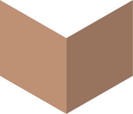
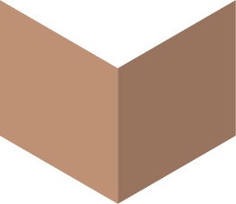
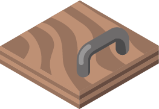
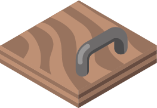

الأنفاق
في البداية، يختبئ القندس خلف أحد الأبواب الداكنة .
حاول أن تجده عن طريق فتح الأبواب .
تنبيه, بعد غلق الباب، يستطيع القندس أن يتحرك بمقدار خلية واحدة إما لليمين أو لليسار .
للحصول على جميع النقاط، حاول أن تجد القندس في عدد من محاولات الفتح.
في البداية، يختبئ القندس خلف أحد الأبواب الداكنة .
حاول أن تجده عن طريق فتح الأبواب .
تنبيه, بعد غلق الباب، يستطيع القندس أن يتحرك بمقدار خلية واحدة إما لليمين أو لليسار .
للحصول على جميع النقاط، حاول أن تجد القندس في عدد من محاولات الفتح.
 



 
